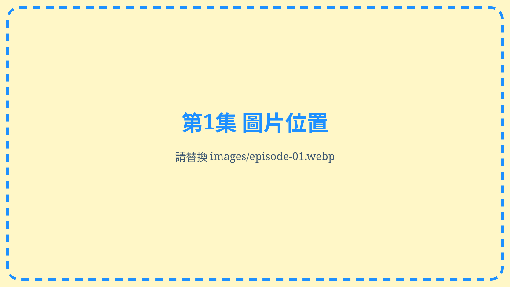
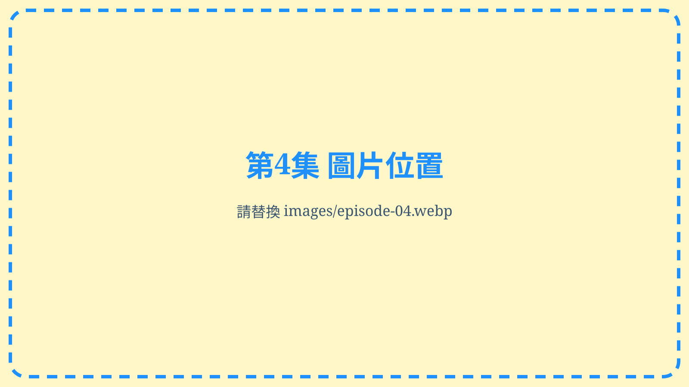

一個世代，十種時代紅利
五年級生的黃金歲月｜10集總摘要介紹
把1961～1970出生的五年級生放回台灣60年的歷史時間軸，從教育、產業、工作、房產與城市，一路看到醫療、財務、知識科技、退休制度與長壽時間；10集真正共同的主角，是「時間」。
開場：如果早出生20年，他們還會走上同樣的人生嗎？
- 00冷開場｜如果早出生20年，他們還會走上同樣的人生嗎？
- 01世代座標｜1961～1970出生的一代，剛好走過台灣變化最快的60年
- 02這10集怎麼看｜不是最好命排行榜，而是一條人生與時代交會的時間軸
- 03第1集｜教育普及與升學擴張：人生往上走的樓梯變長了
- 04第2集｜產業與經濟起飛：走出校門時，列車剛好正在加速
- 05第3集｜穩定工作年代：真正能累積人生的，是沒有被頻繁中斷的時間
- 06第4集｜房地產時代：有些家庭買下房子，也買進後來30年的城市發展
- 07第5集｜城市建設：沒有搬家，生活圈卻自己一路升級
- 08第6集｜全民健保與醫療進步：疾病逐漸從巨大風險變成可以長期管理
- 09第7集｜高儲蓄年代：工作所得慢慢變成退休以前的安全墊
- 10第8集｜紙本到AI：他們完整走過知識取得成本大幅下降的年代
- 11第9集｜退休制度成熟：工作還沒結束，就開始有制度替退休做準備
- 12第10集｜長壽與退休時間：工作結束以後，人生可能還有下一個章節
- 13十種紅利其實是一件事｜教育、工作、房子、城市、健康、財務與退休彼此相連
- 14紅利不等於人人受惠｜同一個年代，也可能走出完全不同的人生
- 152026年的交叉點｜他們從追趕時代的人，走到重新安排人生的人
- 16系列總結｜人的努力是真的，時代也是真的
收束：工作可以退休，但人生，不必跟著退休。
台灣十大「五年級生從教育普及與升學擴張得到的時代紅利」

從九年國教、技職到高等教育普及，看教育階梯如何在五年級生的成長期逐步展開。
開場：以前是學生搶學校，現在有些學校開始搶學生
- 第10名成年後還能重新回到學習現場
- 第9名女性教育機會一步一步追上來
- 第8名高中與高職，把國中後的人生道路往前延伸
- 第7名五專與專科，曾經是另一條重要的向上通道
- 第6名技職教育，剛好碰上台灣需要大量技術人才的年代
- 第5名大專校院開始增加，但真正的大普及還在後面
- 第4名高等教育從菁英型走向大眾型
- 第3名教育程度提高，剛好遇上台灣產業升級
- 第2名高中、高職、五專、專科與大學，形成一座多層次教育階梯
- 第1名九年國民教育，讓整個世代先站上同一個基礎
收束：努力是真的，時代也是真的
台灣十大「五年級生搭上的產業與經濟起飛列車」
從基礎建設、出口、中小企業到半導體，回看五年級生進入職場時遇上的產業擴張。
開場：拿著第一張履歷時，台灣的產業列車正在進站
- 第10名女性走進更多職場，家庭開始出現第二條收入線
- 第9名道路、城市與工業區，把找工作的半徑拉得更遠
- 第8名小工廠、小公司與頭家夢，撐起最廣的一層工作網
- 第7名台灣開始替全世界做生意，工作不再只靠島內市場
- 第6名港口、公路、鋼鐵與石化，先替後來的產業把地基打好
- 第5名高職、五專與專科學到的技術，剛好有產業在等
- 第4名從機械到電子資訊，工作內容開始往更高技術移動
- 第3名新竹科學園區與半導體，打開一個上一代沒有的職業世界
- 第2名經濟蛋糕快速變大，換工作、升遷與改善生活都有更多空間
- 第1名人生最需要機會的二十年，台灣也正在往上跑
收束：努力是真的，時代也是真的
台灣十大「五年級生享受到穩定工作年代的紅利」
從服務業、年資、技術累積到職場規則，整理一段較能長期累積工作經驗的年代。
開場：那張員工證，為什麼一戴就是十幾年？
- 第10名當更多女性留在職場，家庭開始有第二條收入線
- 第9名服務業接棒，工作不再只有工廠那一條路
- 第8名有些工作從第一天開始，就看得見十年後的位置
- 第7名技術做得愈久，身價不是歸零，而是慢慢累積
- 第6名一九八四年之後，工作開始有更清楚的最低規則
- 第5名年資不只是數字，做得愈久，退休那一天真的可能不一樣
- 第4名公司正在長大，基層員工也比較容易看見往上走的階梯
- 第3名從工廠到辦公室，台灣一直在創造新的工作位置
- 第2名工作很辛苦，但有一段時間，失去工作不是每天最大的恐懼
- 第1名人生最需要累積的二十年，台灣也還在創造位置
收束：努力是真的，時代也是真的
台灣十大「五年級生享受到的房地產時代紅利」

從雙薪、房貸、交通建設到長期持有，理解住宅如何同時成為生活空間與家庭資產。
開場：同一張餐桌，兩個年代，兩道完全不同的買房算式
- 第10名當家裡開始有兩份薪水，頭期款第一次看起來沒有那麼遠
- 第9名一間房不必一次付清，住宅金融把價格拆成二十年的承諾
- 第8名工作把人帶進城市，買房開始變成「要在哪裡落腳」的人生決定
- 第7名當年嫌太遠的地方，交通建設慢慢把它拉進生活圈
- 第6名房子先是家，很多年以後才看得出它也是資產
- 第5名敢簽二十年房貸以前，先要相信明年還有薪水
- 第4名真正重要的不是房子多少錢，而是一間房等於家庭幾年所得
- 第3名當年的城市邊緣，二十年後城市自己走了過來
- 第2名房貸一點一點變少，房子卻慢慢變成家庭最大的資產
- 第1名人生最需要一間房的時候，他們剛好比較早走進資產化的大門
收束：努力決定有沒有走進那扇門，時代決定那扇門當時離你多遠
台灣十大「五年級生享受到城市一路發展到家門口的建設紅利」
從學校、醫院、商圈到捷運，觀察城市機能如何在數十年間逐步走進日常生活。
開場：到底是他們搬進了城市，還是城市花了30年走到家門口？
- 第10名以前只求有地方住，後來家附近開始有地方散步
- 第9名孩子不用再跑那麼遠，學校也慢慢走進社區
- 第8名年輕時不覺得醫院重要，60歲以後才知道近一點有多重要
- 第7名以前買一包米要騎車，後來下樓就能買晚餐
- 第6名最沒有存在感的建設，反而每天都在用
- 第5名不是家變近了，是去任何地方的時間開始縮短
- 第4名當家裡不再只靠一台機車，老人和孩子也開始走得出去
- 第3名當捷運站真的出現在附近，那個很遠的家突然不一樣了
- 第2名真正改變生活的，從來不是只有一座捷運站
- 第1名當年買的是城市邊緣，30年後城市自己走了過來
收束：有些紅利，要住了30年以後才看得見
台灣十大「五年級生享受到全民健保與醫療進步的紅利」
從急重症、健檢、慢性病管理到全民健保，整理醫療制度與技術進步帶來的生活改變。
開場：健保上路時他們還年輕，真正需要它的日子在30年後
- 第10名以前怕的是來不及送醫，後來急重症開始有一張更密的安全網
- 第9名以前很多檢查等到不舒服才做，後來開始在沒症狀時找風險
- 第8名以前看病靠紙本與記憶，後來一張卡把30年的就醫生活串了起來
- 第7名以前開刀像一件大事，後來有些治療傷口更小、恢復更快
- 第6名以前很多病是撐到出事，後來三高變成可以長期追蹤的日常
- 第5名以前癌症常讓人措手不及，後來篩檢把「早一點知道」變成機會
- 第4名以前重大疾病最怕拖垮一家人，後來有人一起分擔最重的那一段
- 第3名以前醫療資源各有門檻，後來看診、拿藥與轉診進入共同制度
- 第2名以前不是每個人都有同一把醫療保護傘，1995年後規則被重新改寫
- 第1名健保上路時他們25到34歲，真正需要它時制度已經陪了31年
收束：有些制度的價值，要等身體開始提醒你才真正看見
台灣十大「五年級生從高儲蓄年代得到的財務紅利」
從存摺、儲蓄習慣、利率到長期累積，回看高儲蓄年代如何影響家庭財務選擇。
開場：那本存摺上的9%，真的代表比較好存錢嗎？
- 第10名以前理財第一步，不是開投資App，而是先有一本存摺
- 第9名不是以前的人比較能忍，而是消費還沒有24小時追著你跑
- 第8名一個人領薪水，一家人一起算
- 第7名真正幫忙存錢的，不只利率，還有往上走的收入
- 第6名當整個社會都相信「先存一點」，儲蓄就變成日常
- 第5名9%以上的定存，看起來像今天難以想像的數字
- 第4名利率9%不等於真的多9%，還要問物價拿走多少
- 第3名不用先懂股票，錢放在銀行也能感覺它在長大
- 第2名真正厲害的不是某一年利率，而是提早20年開始
- 第1名最好的紅利，是好幾個條件在人生關鍵期一起出現
收束：真正留下來的，不只是利息，而是一個世代對時間的信任
台灣十大「五年級生從紙本世界一路享受到AI時代的知識紅利」
從百科全書、電腦、網路、手機一路到AI，呈現一代人跨越紙本與數位知識世界。
開場：同一個問題，從翻百科全書到直接問AI
- 第10名影印機與辦公設備，讓知識第一次可以大量帶走
- 第9名百科全書、報紙與圖書館，撐起紙本年代的知識入口
- 第8名個人電腦走進生活，知識第一次可以自己整理
- 第7名一片光碟裝進一套百科全書，紙張開始讓位給數位
- 第6名網際網路走進家庭，找資料第一次不用等圖書館開門
- 第5名搜尋引擎改變世界，不知道答案開始變成知道怎麼找
- 第4名智慧型手機與行動網路，把整座圖書館放進口袋
- 第3名YouTube、Wikipedia與線上課程，讓不會的人也能自己學
- 第2名雲端、電子書與數位資料庫，讓知識開始跟著人走
- 第1名從搜尋答案到直接提問，AI重新打開人生後半場的學習能力
收束：真正的知識紅利，不是知道得更多，而是一輩子還有能力繼續學
台灣十大「五年級生享受到退休制度逐步成熟的時代紅利」
從勞動保障、公教退撫、勞保、國民年金到個人專戶，整理退休安全網逐步成形的過程。
開場：同年出生的4個人，60歲以後卻拿著完全不同的退休劇本
- 第10名退休第一次不再只是老闆一句話，勞動法制逐步建立保障規則
- 第9名公教退撫長期累積，讓年資與退休生活建立更清楚的連結
- 第8名職業工會與勞保，把部分自營與無一定雇主工作者拉進保障網
- 第7名國民年金補上另一張網，沒有典型職場身分的人也有老年保障入口
- 第6名從一次領到按月領，退休開始面對真正的長壽問題
- 第5名2005年勞退新制上路，退休金開始從跟公司走變成跟著人走
- 第4名雇主固定提繳，讓退休準備變成每個月都在累積的長期工程
- 第3名退休所得不再只靠一筆錢，多層次保障逐漸成形
- 第2名走到退休門口時，身後已經比40年前多了好幾張安全網
- 第1名最大的紅利，是退休第一次可以在還沒老以前就開始制度化準備
收束：工作會結束，但一個制度真正成熟，是讓人敢想像工作結束以後的生活
台灣十大「五年級生享受到父母那一代沒有的長壽與退休時間紅利」
從家庭責任、生活科技、醫療、退休到重新學習，思考工作結束後可能出現的另一段人生。
開場：如果明天開始不用上班，你知道接下來20年要做什麼嗎？
- 第10名孩子長大了，退休後第一次可能重新出現「自己的時間」
- 第9名生活設備與數位服務，把以前花在日常瑣事上的時間慢慢還回來
- 第8名城市與交通成熟，退休以後反而有更大的生活半徑
- 第7名醫療進步讓更多疾病從人生終點變成可以長期管理
- 第6名退休制度逐步成熟，停止工作第一次比較可能成為人生選項
- 第5名退休後還能工作，但工作第一次不一定只是為了生存
- 第4名網路、手機與AI，讓退休後重新學習幾乎隨時都能開始
- 第3名平均餘命延長，60歲第一次不必自動等於人生尾聲
- 第2名真正重要的不只是活多久，而是能自己生活多久
- 第1名人生第一次可能在工作結束以後，還留下另一段完整的人生
收束：工作會退休，但人生不必跟著退休